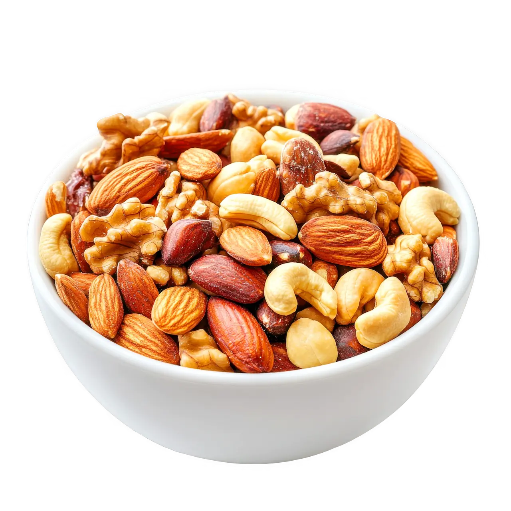

Mix Casero de Frutos Secos
Tiempo: 10 minutos · Dificultad: Muy Fácil · Porciones: 6 porciones

Preparación
- Si las semillas o frutos secos vienen crudos, tuéstalos en una sartén a fuego medio durante 3 a 5 minutos moviendo constantemente hasta que suelten aroma. Deja enfriar por completo.
- En un tazón grande, coloca las almendras, el maní, los marañones, las semillas de girasol y las semillas de calabaza.
- Agrega los arándanos deshidratados o pasas y mezcla con ayuda de una espátula.
- Añade las chispas de chocolate oscuro y espolvorea la sal marina fina sobre la mezcla.
- Revuelve todos los ingredientes uniformemente hasta lograr una distribución equilibrada.
- Guarda en un frasco de vidrio hermético o bolsa resellable para mantener la frescura y crocancia por semanas.
¡El acompañante ideal para llevar a cualquier lugar y recargar energía!
Tips de nuestra comunidad
Descubre recetas, combinaciones y secretos compartidos por otros amantes de la cocina. ¿Tienes un secreto de cocina?
Compártelo con la comunidad.
Puedes agregar una pizca de canela o paprika ahumada antes de guardar el mix para darle un sabor sazonado diferente.
Asegúrate de que los frutos secos estén totalmente fríos antes de agregar el chocolate para que no se derritan dentro del recipiente.